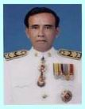

(สำเนา)
บัญชีรายชื่อกรรมการสิญจน์อุทิศดิตถารามมูลนิธิ
ประจำ พ.ศ. ๒๕๓๘ ถึง พ.ศ. ๒๕๔๑
บัญชีรายชื่อกรรมการสิญจน์อุทิศดิตถารามมูลนิธิ
ประจำ พ.ศ. ๒๕๓๘ ถึง พ.ศ. ๒๕๔๑
|
ลำดับที่
|
รูปถ่าย
|
ชื่อ
|
ที่อยู่
|
อาชีพ
|
หน้าที่เกี่ยวกับมูลนิธิ
|
|
๑
|
พระราชพิพัฒนาภรณ์ (ชูชาติ กนฺตวณฺโณ) |
วัดท่าไทร
ต.ท่าทองใหม่ อ.กาญจนดิษฐ์ จ.สุราษฎร์ธานี 84290 โทร.0-7727-3834, มือถือ 08-1606-0244 |
พระภิกษุ | ที่ปรึกษา
และ ควบคุมดูแลการปฏิบัติงาน ของคณะกรรมการมูลนิธิ |
|
|
๒
|
ดร. ณรงค์ พุทธิชีวิน | 555
หมู่ 2 ตำบลท่าทองใหม่ อำเภอกาญจนดิษฐ์ จังหวัดสุราษฎร์ธานี รหัสไปรษณีย์ 84290 e-e-mail narong@sru.ac.th |
รับราชการ | ประธานกรรมการ | |
|
๓
|
นายทรงยศ ยอดดนตรี | รองประธานกรรมการ | |||
|
๔
|
นางลัดดาวัลย์ สุภากุล | กรรมการและเหรัญญิก | |||
|
๕
|
นางทวีลาภ ยอดดนตรี | กรรมการ | |||
|
๖
|
นายศุภชัย วิชัยดิษฐ | กรรมการ | |||
|
๗
|
นายกมล ดิษฐ์ยานุรักษ์ | กรรมการ | |||
|
๘
|
นายปัญญวุฑ ปะทะวานิช | กรรมการ | |||
|
๙
|
นายสมพร กลับวิหค | กรรมการ | |||
|
๑๐
|
นายเชวง ชูมี | กรรมการ | |||
|
๑๑
|
นายธีรยุทธ สุทธิรักษ์ | กรรมการ | |||
|
๑๒
|

|
นายนรินทร์ ศรีรุ่งเรือง | กรรมการและเลขานุการ |
ไป Web สำนักงานเจ้าคณะภาค ๑๖
ไป Web ศูนย์ฝึกอบรมคอมพิวเตอร์วัดท่าไทร
ไป Web ศูนย์พัฒนาคุณธรรมภาคใต้
ไป Web วิทยุชุมชนตำบลท่าทองใหม่
ไป Web ชมรมวีอาร์ร้อยเกาะสุราษฎร์ธานี